Devices and papers¶
Images of devices designed with Quantum Metal, and the papers, theses and software that used it. Notebooks that reproduce published devices are on a separate page: Reproduced devices and results (notebooks).
Entries come from published sources that name Quantum Metal (or Qiskit Metal).
A paper is listed under “Papers and theses” only if it used the software for a
design or an analysis; papers that cite or review it are at the end.
To add or correct an entry, open an issue or a pull request that edits
docs/_data/papers.json.
Device images¶
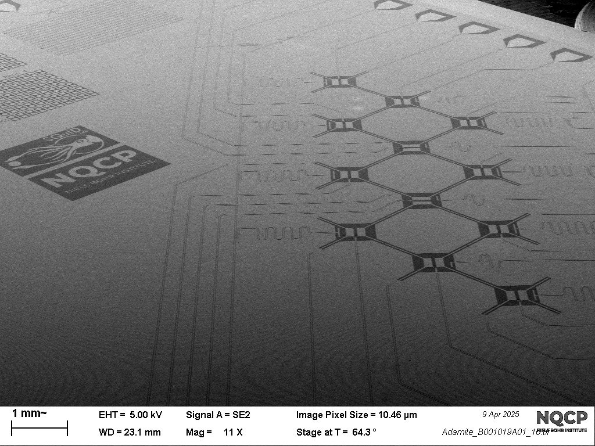
Design: Christopher W. Warren, SQuID Lab, Niels Bohr Institute, University of Copenhagen; Novo Nordisk Quantum Computing Programme (NQCP)
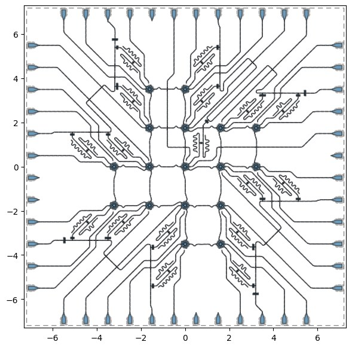
Design: ETH Zurich Quantum Device Lab (Krinner et al., Nature 2022); rebuild: notebook 53
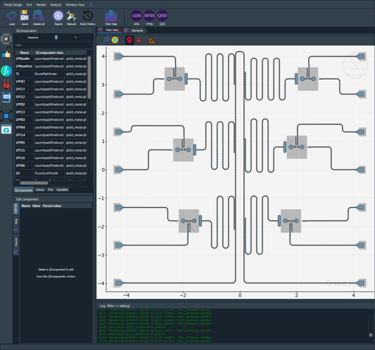
Figen Yilmaz, Andersen Lab, QuTech / TU Delft
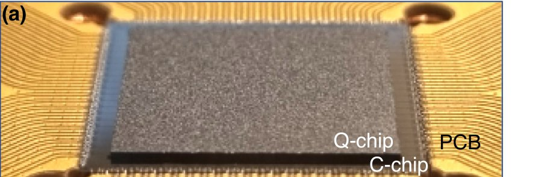
S. Kosen et al., PRX Quantum 5, 030350 (2024) (arXiv:2403.00285), CC BY 4.0
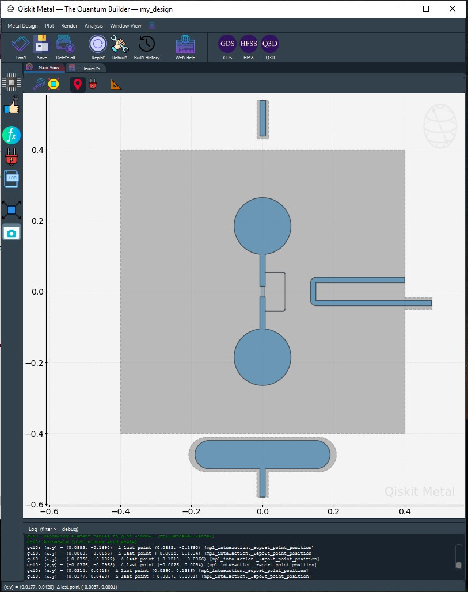
Figen Yilmaz, Andersen Lab, QuTech / TU Delft
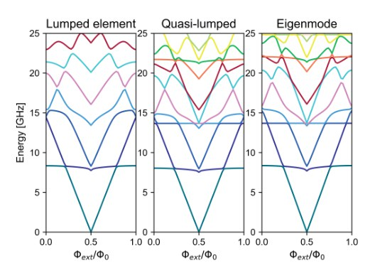
Roald van den Boogaart, Andersen Lab, QuTech / TU Delft
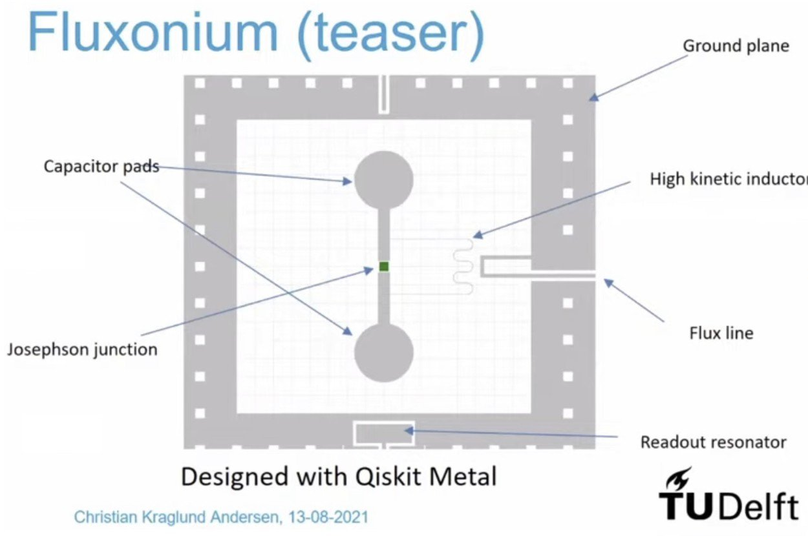
Christian Kraglund Andersen, TU Delft
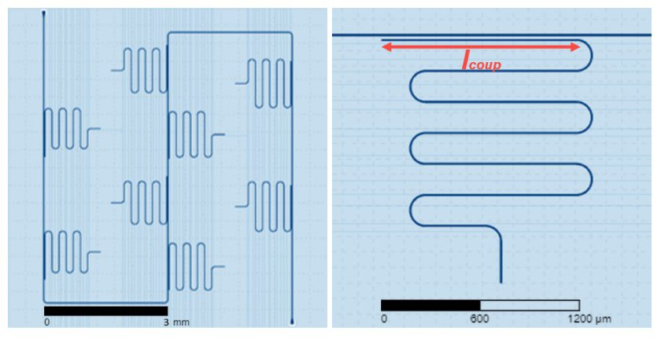
QuTech / TU Delft, Andersen Lab (thesis figure)
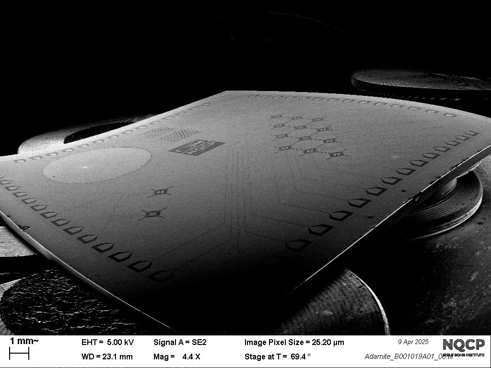
Design: Christopher W. Warren, SQuID Lab, Niels Bohr Institute, University of Copenhagen; Novo Nordisk Quantum Computing Programme (NQCP)
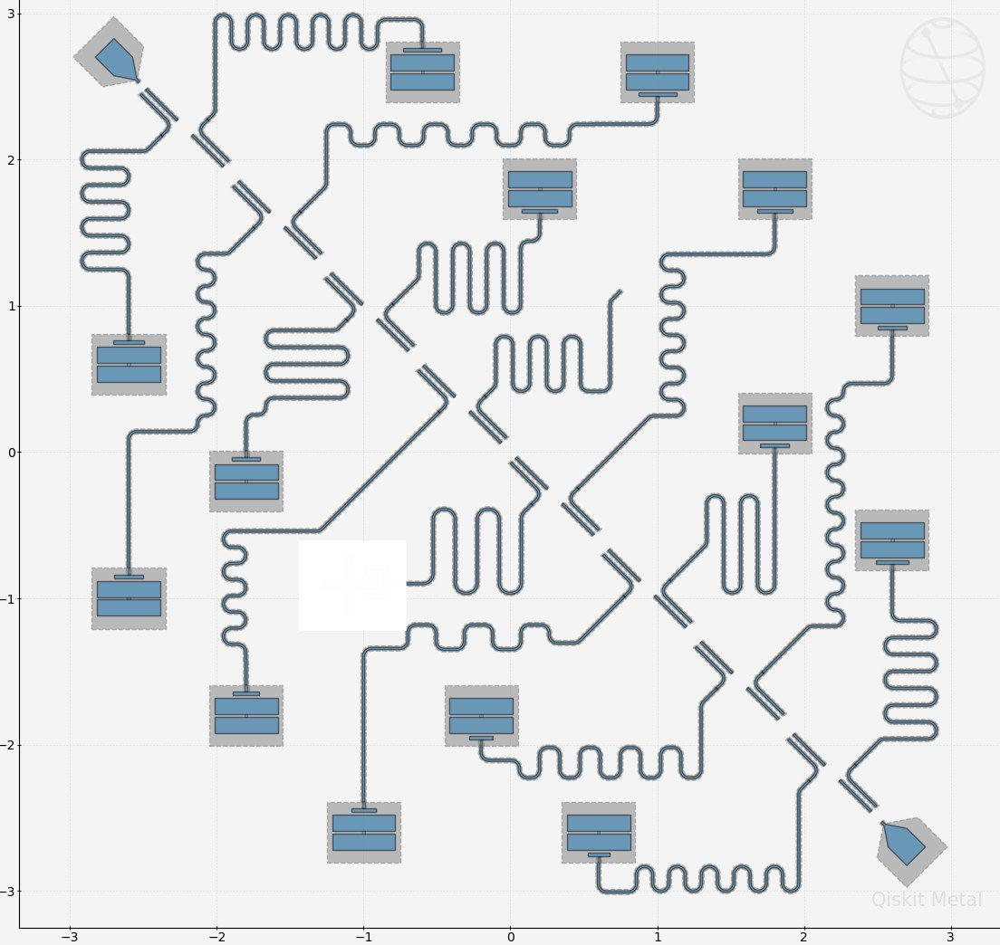
Design: Thue Christian Thann; Niels Bohr Institute, University of Copenhagen; Novo Nordisk Quantum Computing Programme (NQCP)
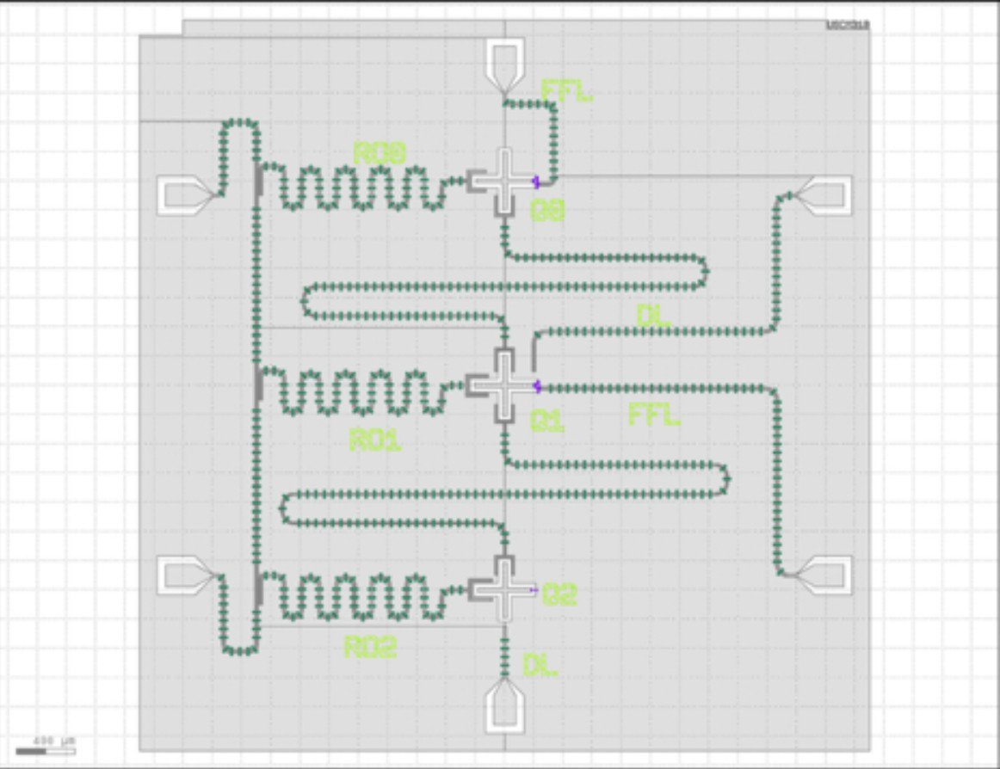
Eli Levenson-Falk, Sadman Ahmed Shanto
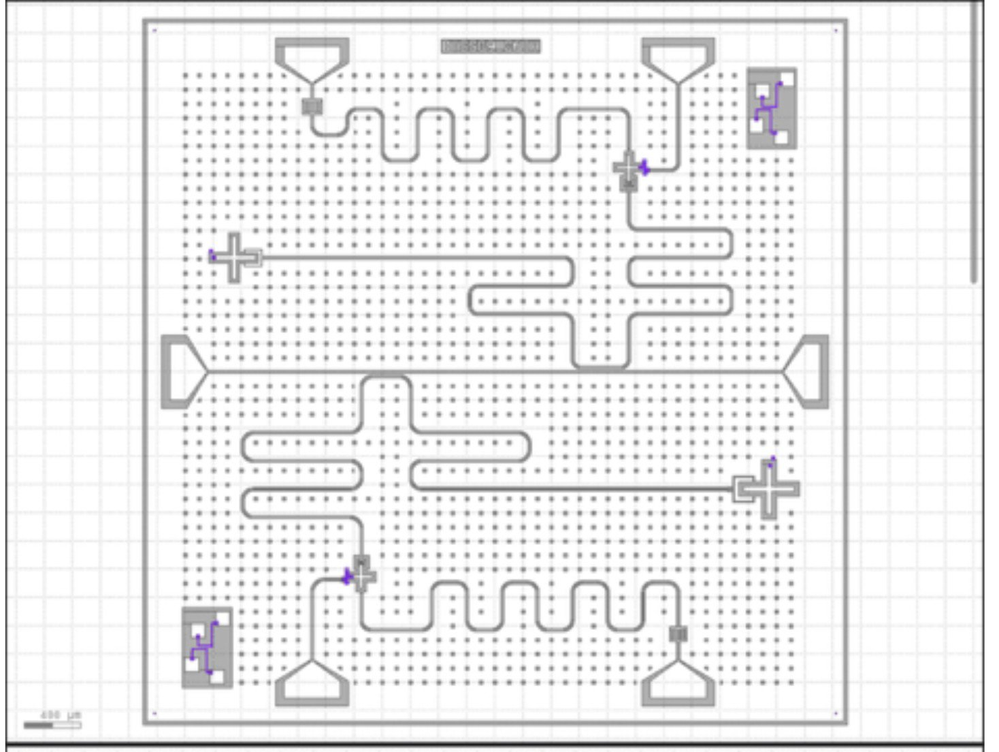
Eli Levenson-Falk, Sadman Ahmed Shanto
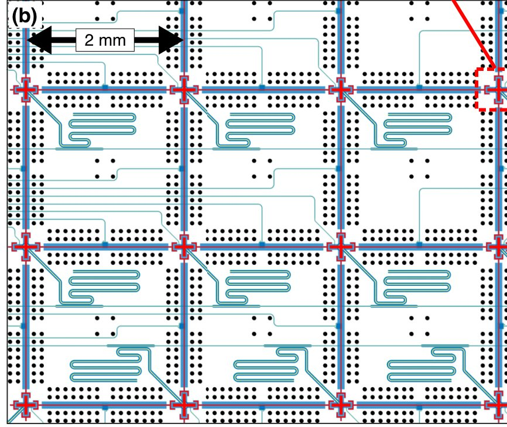
S. Kosen et al., PRX Quantum 5, 030350 (2024) (arXiv:2403.00285), CC BY 4.0
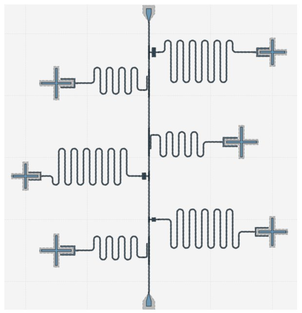
S. A. Shanto et al., Quantum 8, 1465 (2024) (arXiv:2312.13483), CC BY 4.0
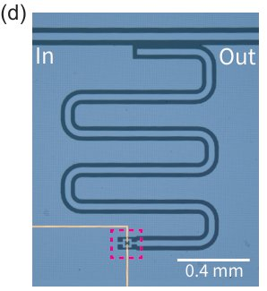
B. H. Elfeky et al., PRX Quantum 4, 030339 (2023) (arXiv:2303.04784), CC BY 4.0
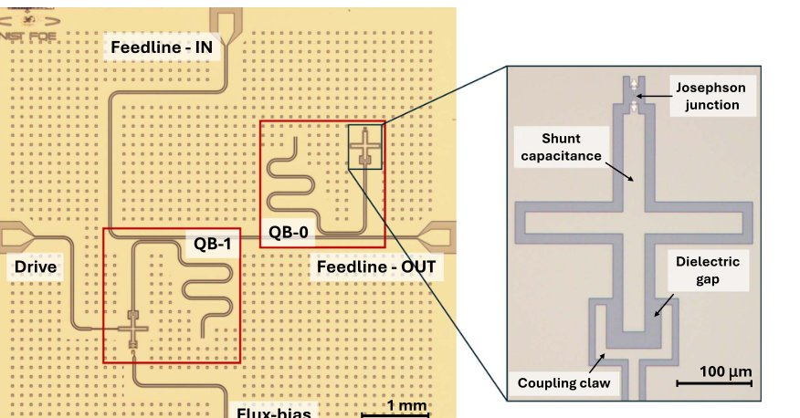
R. Moretti, D. Labranca et al., IEEE Trans. Quantum Eng. 7 (2026) (arXiv:2409.05988), CC BY 4.0
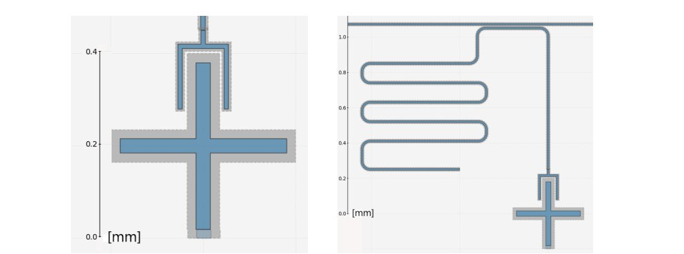
D. Labranca et al., Nucl. Instrum. Methods A (2022) (arXiv:2207.09290), CC BY 4.0
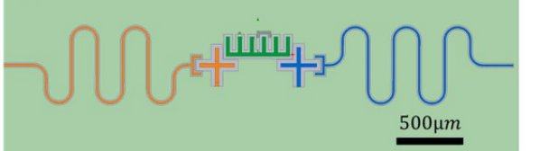
A. M. Eriksson Lundstrom et al., Quantum Sci. Technol. 11, 035024 (2026) (arXiv:2508.18027), CC BY 4.0
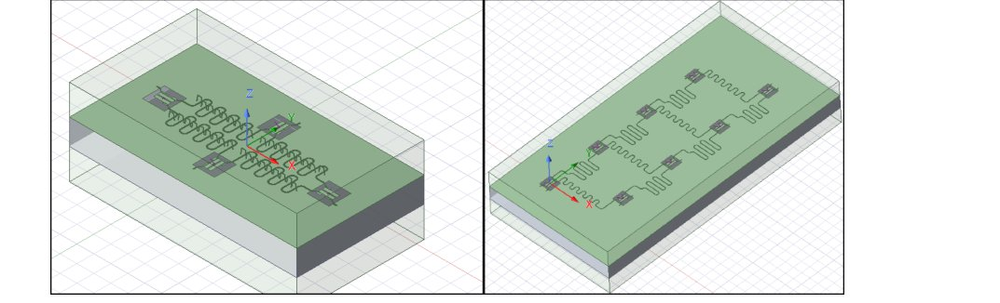
J. Gayatri, S. S. Veni, arXiv:2508.05339 (2025), CC BY 4.0
Chips and designs¶
- Alexandria Quantum Hackathon 2026: 5-qubit layout optimizer (Pocket-X)Geometric layout optimizer for a five-qubit chip built in Qiskit Metal.
- Alexandria Quantum Hackathon 2026: linear vs star 5-qubit chip (Parachute)Compares linear-chain and star topologies for a five-qubit transmon processor designed in Qiskit Metal.
- Dual-transmon readout chip with feedline S21 (BurhanCalik)Dual-transmon readout design in Qiskit Metal with feedline-coupled S21.
- Fabricated and measured qubit from QDesignOptimizer workflow (Chalmers)Qubit designed with Qiskit Metal and pyEPR optimization, then fabricated and characterized at 20 mK.
- Dark-matter-search transmon chip (flux-tunable pair)Fabricated and characterized transmon circuit designed with Qiskit Metal.
- SJSU planar qubit chip (taped out)Planar qubit layout designed with Qiskit Metal and taped out for fabrication.
- QUIET underground cryostat qubit chips (Seidel)Device design and simulation with Qiskit Metal and SQuADDS before fabrication; devices tested in an underground facility.
- 400-transmon patterned demo chip (Metal to e-beam litho)Demonstrates a path from Qiskit Metal design to a lithography-written pattern.
- Four-qubit chip analysis (uday-0702)Four-qubit superconducting chip designed in Qiskit Metal, with analyses.
- Undergraduate thesis: 4-qubit chip in Qiskit Metal and AnsysDesign and tuning of a four-qubit chip using Qiskit Metal and Ansys.
- SQuADDS validated six-xmon chip (MIT-LL SQUILL fabrication)Device layout produced with Qiskit Metal, fabricated, with measured Hamiltonian parameters compared against simulation.
- Axion-detection transmon chipTransmon chip circuit designed with Qiskit Metal.
- Chalmers flip-chip QPU (signal-crosstalk study)Flip-chip processor layout designed in Qiskit Metal; 240 flux-crosstalk pairs measured.
- Xmon three-qubit device for non-Markovian probeThree-qubit Xmon device laid out with Qiskit Metal and simulated in Ansys; device measured experimentally.
- Compact broadband Purcell-filter chipBroadband Purcell filters designed with Qiskit Metal.
- Al-InAs planar JJ transmon chipChip design constructed in Qiskit Metal and rendered into HFSS.
- 4-qubit design for Qiskit Metal Korea Hackathon 2022Four-qubit sample design for a Qiskit Metal Korea hackathon study group.
- QUB-IT first transmon chip designXmon qubit with quarter-wave resonator laid out in Qiskit Metal for first fabrication.
- 6-qubit computer designed in Qiskit MetalSix-qubit superconducting quantum computer designed in Qiskit Metal.
- Chalmers 8-qubit test chip designed with Qiskit MetalEight-qubit chip designed by a Chalmers team with Qiskit Metal; spectroscopy of the fabricated device shown.
- Qiskit Hackathon Korea 2021: two qubit chips designed in Metal in two daysOne of two qubit chips designed by hackathon teams with Qiskit Metal in a two-day event.
Papers and theses that used Quantum Metal¶
- QDesignOptimizer based on ANMod: an automated, physics-guided, multi-parameter design optimizer for superconducting quantum devicesQubit design optimized with Qiskit Metal and pyEPR, then fabricated and characterized at 20 mK.
- Component-Level Inverse Design of Transmon Qubits Using Neural NetworksNeural network predicts Quantum Metal layout parameters from target transmon Hamiltonian parameters.
- Superconducting qubits for particle detection and fundamental tests of quantum mechanicsQubit-design loop that guesses Qiskit Metal parameters, simulates with an EM solver, and predicts parameters with a neural network.
- Energy-participation-ratio analysis for very anharmonic superconducting circuitsFluxonium designed with Qiskit Metal and rendered into Ansys HFSS for energy-participation-ratio analysis.
- Multimode Duffing–Jaynes–Cummings Hamiltonian modeling of a coupled transmon chip layoutCoupled-transmon layout designed and parameterized in Qiskit Metal and analyzed with 3D eigenmode simulations in HFSS.
- Co-Design of a Quantum Circuit using QGHNN for High Separate Fidelity and Maximum Grover Algorithm AccuracyOptimized circuit parameters implemented as a Qiskit Metal layout and checked with EPR analysis.
- SQChip-EM: A Qiskit-Metal-Based Layout-to-EM Simulation Dataset for Superconducting Quantum ChipsOpen dataset linking Qiskit Metal layouts to HFSS and Q3D electromagnetic simulation results.
- A review of design concerns in superconducting quantum circuitsReview that walks through a superconducting-circuit design flow using KLayout and Qiskit Metal.
- Open-Source Highly Parallel Electromagnetic Simulations for Superconducting CircuitsPython API integrating Qiskit Metal, Gmsh, Palace and Paraview into an open-source simulation workflow.
- Superconducting Qubits UndergroundDevice design and simulation with Qiskit Metal and SQuADDS before fabrication; devices tested in an underground facility.
- Transmon Qubit Modeling and Characterization for Dark Matter SearchFabricated and characterized transmon circuit designed with Qiskit Metal.
- Benchmarking Quantum Gates and CircuitsReview that describes a superconducting qubit device whose layout was created with Qiskit Metal.
- Analysis of a 3D Integrated Superconducting Quantum Chip StructureUses Qiskit Metal 0.1.5 for circuit layout, with HFSS and pyEPR, to analyze a 3D integrated chip structure.
- Superconducting Quantum Chip Design and SimulationPlanar qubit layout designed with Qiskit Metal and taped out for fabrication.
- Modeling realistic multilayer devices for superconducting quantum electronic circuitsPhase-basis Hamiltonian for multilayer devices incorporated into scqubits and Qiskit Metal.
- End-to-End Design Flow for 4-Qubit Superconducting Quantum Chip with Alternative Coupling ArchitecturesFour-qubit chip designed with Qiskit Metal and Ansys Electronics; parameters tuned and verified with LOM and EPR analysis.
- Exploring graph cuts in quantum approximate optimization algorithmLayout design and eigenmode simulations in Qiskit Metal and Ansys for a QAOA graph-cut hardware study.
- Material-Driven Optimization of Transmon Qubits for Scalable and Efficient Quantum ArchitecturesFour- and eight-qubit transmon layouts created with Qiskit Metal and simulated with COMSOL.
- QPlacer: Frequency-Aware Component Placement for Superconducting Quantum ComputersUses Qiskit Metal to simulate parasitic capacitance and follows its routing configurations for qubit component placement.
- Superconducting Qubit Design Using Qiskit MetalBook on superconducting qubit design with Qiskit Metal, with accompanying code.
- Energy-Participation Ratio Method for Quantization and AnalysisBook chapter on the energy-participation-ratio method with emphasis on its implementation in Qiskit Metal.
- SQuADDS: A validated design database and simulation workflow for superconducting qubit designDevice layout produced with Qiskit Metal, fabricated, with measured Hamiltonian parameters compared against simulation.
- Design and Simulation of a Transmon Qubit Chip for Axion DetectionTransmon chip circuit designed with Qiskit Metal.
- Entanglement Assisted Probe of the Non-Markovian to Markovian Transition in Open Quantum System DynamicsQubit layout designed with Qiskit Metal and simulated in Ansys; device measured experimentally.
- Signal Crosstalk in a Flip-Chip Quantum ProcessorFlip-chip processor layout designed in Qiskit Metal; 240 flux-crosstalk pairs measured.
- Characterization of broadband Purcell filters with compact footprint for fast multiplexed superconducting qubit readoutBroadband Purcell filters designed with Qiskit Metal.
- Efficiently Building and Characterizing Electromagnetic Models of Multi-Qubit Superconducting CircuitsUses Ansys HFSS and Qiskit Metal for part of the device modeling.
- A Framework for the Design and Realization of Alternative Superconducting Quantum ArchitecturesUses Qiskit Metal to render physical designs and run LOM-type analyses for alternative superconducting architectures.
- Quasiparticle Dynamics in Epitaxial Al - InAs Planar Josephson JunctionsChip design constructed in Qiskit Metal and rendered into HFSS.
- Simulating Quantum Hardware using Qiskit MetalSimulates quantum hardware with Qiskit Metal and Ansys Electronics Desktop.
- Machine Learning-Based Predictive Modeling for Designing Transmon Superconducting QubitsMachine-learning models for transmon design trained on simulation data collected with Qiskit Metal and Ansys Electronics.
- First design of a superconducting qubit for the QUB-IT experimentXmon qubit with quarter-wave resonator laid out in Qiskit Metal for first fabrication.
- Circuit quantum electrodynamics (cQED) with modular quasi-lumped modelsDescribes a quasi-lumped-oscillator model whose qubit-cell Maxwell-matrix extraction is automated with Qiskit Metal.
Software built on or for Quantum Metal¶
Further tools are described on The Quantum Metal Ecosystem.
- SQuDO (Superconducting Qubit Design Optimizer)Qubit design optimizer that takes design variables from a Qiskit Metal design.
- QDW 2026 workshop materialsWorkshop materials with a shared environment including Quantum Metal, SQDMetal, SQuADDS, scqubits and PyPalace.
- Nanoacademic fork (QTCAD renderer)Fork of Quantum Metal adding a QTCAD-driven renderer.
- SQChip-EMQiskit Metal scripts and layout-to-electromagnetic-simulation dataset for one- to eight-qubit chips.
- QuantaMindScripts importing Qiskit Metal designs and MetalGUI, with a wrapper for LOM and EPR analysis and GDS export.
- cQED_GenGraph-neural-network inverse design whose output is translated into a Qiskit Metal layout.
- AgentQPipeline from a SQuADDS database query to a Qiskit Metal GDS layout, driven by an LLM through MCP.
- Qubit-measureLists quantum-metal as a dependency of its design environment, used with the Ansys stack.
- ansatz-integrationsAnsatz solver integration used through Quantum Metal's lumped-element and LOM analysis interfaces.
- quantum-metal-extensionExtension for Quantum Metal with new circuit elements and PyAEDT scripts.
- metal-flowInstalls quantum-metal with mesh support alongside SQDMetal.
- QDesignOptimizerAutomated design optimization that integrates with Qiskit Metal and HFSS.
- QDW 2025 materials (LF Lab)Workshop materials using SQuADDS and SQDMetal, which require Qiskit Metal.
- pyPalace (PyPI: pypalace)Includes an example simulating a Quantum Metal design with Palace.
- qiskit-metal-palace forkPatched version of Qiskit Metal supporting 2D metal export to AWS Palace.
- cqed-design-ai (MCP servers)MCP servers for LLM-driven CAD generation through Qiskit Metal with frequency and kappa targeting.
- ML_qubit_designNotebooks predicting Quantum Metal design parameters from Hamiltonian quantities with a neural network.
- Qiskit-Metal-to-LithoDemonstrates a path from Qiskit Metal design to a lithography-written pattern.
- QPlacerQubit placement tool that imports qiskit_metal.designs.
- EDA-QDesign automation tool that uses Qiskit Metal style layout assets and imports qiskit_metal.
- Qubit_DesignAutomation module importing Qiskit Metal's EPR analysis.
- Qiskit_Metal-KLayout-BlenderRenders a quantum chip in Blender using Qiskit Metal and KLayout.
- MQT DASQAMaps architectures to Qiskit Metal layouts and subclasses a Metal transmon component.
- SQDPalaceAPI integrating Qiskit Metal, Gmsh and Palace.
- cavity_sweepsCode importing qiskit_metal for LOM parameter sweeps.
- design_schema_WM1Notebook importing qiskit_metal QComponent and MetalGUI.
- SQuADDSDesign database and simulation workflow built on Quantum Metal and pyEPR.
- SQDMetalPython API wrapping Qiskit Metal, Gmsh and Palace for electromagnetic simulation.
- metal-libraryLibrary of pre-simulated superconducting quantum components built on Qiskit Metal.
- QubitPresimulatedLibrary of premade qubits made in Qiskit Metal.
- QubitCavityFeedlineAutomatic characterization of qubit-cavity-feedline systems simulated with Qiskit Metal.
- TransmonCavitySimUses Qiskit Metal to simulate Hamiltonian parameters of a transmon coupled to a readout cavity.
- anvilUtilities for Qiskit Metal.
Papers that cite or discuss Quantum Metal¶
Reviews, comparisons and papers that name the software without using it for a design in the work.
- Qiskit Metal: An Open-Source Framework for Quantum Device Design & AnalysisThe software record, with the canonical citation.
- Physical Design Automation for Planar Superconducting Quantum ChipsReviews Quantum Metal as a baseline for planar superconducting chip design automation.
- Method for the numerical analysis of hybrid lumped-distributed superconducting quantum circuitsCompares against a Qiskit Metal, HFSS and pyEPR workflow; test structure taken from the Qiskit Metal tutorials.
- Quantum Chip Paradigm FrameworkMentions Qiskit Metal among tools for parameterized layout generation.
- SPICE-Q and Large-Scale Quantum Chip ProductionStates that Qiskit Metal can perform parameterized layout generation.
- Fabless Quantum Chip Design and Commercial ProductionCites Qiskit Metal as part of the chip design toolstack.
- From GDSII to Wafer: EDA Design Flow and Data Conversion for Wafer-Scale Manufacturing of Superconducting Quantum ChipsDescribes Qiskit Metal as focused on front-end design and simulation.
- Review of Superconducting Qubit Devices and Their Large-Scale IntegrationReview stating Qiskit Metal is a commonly used platform; includes a layout built in Metal.
- Utilizing discrete variable representations for decoherence-accurate numerical simulation of superconducting circuitsCites the Qiskit Metal software record.
- When AI meets quantum information: A comprehensive reviewReview mentioning machine learning on Qiskit Metal and Ansys data and Metal-generated SQuADDS designs.
- In Situ Tunable Interaction with an Invertible Sign between a Fluxonium and a Post CavityNotes that HFSS with BBQ or the Qiskit Metal extension pyEPR could not simulate highly anharmonic fluxonium-type qubits.
- EDA-Q: Electronic Design Automation for Superconducting Quantum ChipCompares EDA-Q with Qiskit Metal in a feature table.
- Quantum Design Automation: Foundations, Challenges, and the Road AheadSurvey listing Qiskit Metal as a representative quantum design tool with layout, quantization and Hamiltonian analysis.
- A scalable routing method for superconducting quantum processorBenchmarks a new routing method against the A-star routing in Qiskit Metal.
- Optimizing Superconducting Qubit Performance: A Theoretical Framework for Design, Analysis, and CalibrationCites the Qiskit Metal software record and APS abstract.
- Open hardware solutions in quantum technologyLists Qiskit Metal and pyEPR among open chip-design projects.
- Lecture Notes on Quantum Electrical CircuitsLecture notes describing Qiskit Metal as software implementing the EPR method.
- A Review of Quantum Scientific Computing Algorithms for Engineering ProblemsMentions the Qiskit Metal library for hardware design.
- Microarchitectures for Heterogeneous Superconducting Quantum ComputersMaps an architecture to a physical layout using existing frameworks such as Qiskit Metal.
- QuantumPro: An Integrated Workflow for the Design of Superconducting Qubits Using PathWave Advanced Design System (ADS)Validates a commercial design workflow against the two-coupled-transmons example from Qiskit Metal.
- Is there a Moore's law for quantum computing?Mentions Qiskit Metal as a tool for designing superconducting chipsets.
- CircuitQ: an open-source toolbox for superconducting circuitsCites Qiskit Metal as a related circuit toolbox.
- Integrating quantum processor device and control optimization in a gradient-based frameworkCites the Qiskit Metal software record.
- A Framework for Quantum Device Design—Project Qiskit MetalAPS March Meeting 2021 abstract by the Metal team announcing the Qiskit Metal project.
- Energy-participation quantization of Josephson circuitsPresents the pyEPR method and cites Qiskit Metal, which wraps pyEPR.
- qpd (Quantum Parity Detectors)Documentation cites Qiskit Metal functions for computing bare Hamiltonian parameters.
- qiskit-metal conda-forge feedstockconda-forge feedstock packaging qiskit-metal.
- QC-Hardware-How-ToCurated resource list that includes Qiskit Metal.
- qiskit-metal-dockerDocker setup for running Qiskit Metal in a container.
- qcsa-at-ucla forkFork of Qiskit Metal under the UCLA QCSA organization.
- qiskit-metal-textbookIntroduction to Qiskit Metal written for new research-group members.
- local-metal-webappInstaller and runner for a local version of the Qiskit Metal web app.
- 2022 Qiskit Metal Study (Qiskit Korea)Study materials for a Qiskit Korea study on Qiskit Metal, February 2022.
Next¶
To rebuild one of these devices, see Reproduced devices and results (notebooks). To start a design of your own, see Quick start.